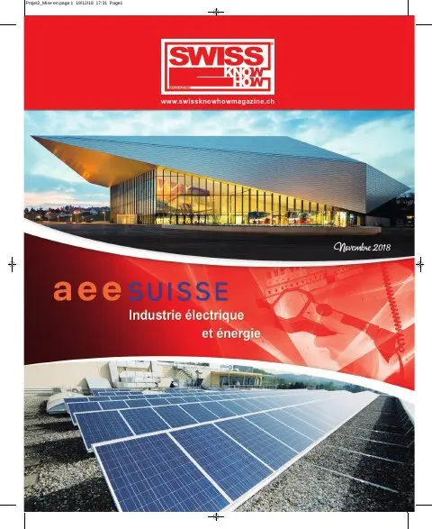

Créée en 2004, neo technologies réunit une cinquantaine de consultants à Renens, Zurich et dans la région de Lugano. Spécialisée dans le processus « meter to cash », du relevé des compteurs à la facturation, elle a anticipé dès 2010 le déploiement des compteurs intelligents en Suisse et exploite une plateforme de smart metering multifluide hébergée en Suisse, renouvelée en 2016-2017, qui permet aux petits distributeurs comme les communes de mutualiser les coûts. En 2011, elle a lancé Green E-Value, dont les versions Kiosk et Building affichent et suivent les consommations des immeubles, avec alertes et signature thermique. En partenariat avec Signa-Terre, elle prépare une offre intégrant décomptes de chauffage et gestion de l’autoconsommation électrique.
Texte rédigé avec l'aide de l'IA à partir de l'édition imprimée du magazine. En savoir plus
« Un partenariat d’avenir ! »

Paru dans
Swiss Knowhow – AEE Suisse : industrie électrique et énergie 2018
2018 · page 42-43 · article original en français
Signaler une erreur Lire l'article complet PDF